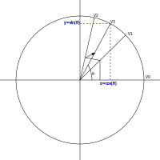

The CORDIC algoritm and direct digital synthesis (DDS)
The CORDIC (which stands for "coordinate rotation digital computer") algorithm, was developed in 1956 by Jack.E. Volder, to replace the analog resolvers used for missiles navigation by digital computation on digital computer. The algorithm turned out to be very successfull, today it can be found in every pocket calculator, doing the computation of the trigonometrical functions sinus, cosinus and tangens. But the algorithm is not limited to that it can also calculate logarithmic and exponential functions, given the needed modifications.

The CORDIC algorithm
In the image below, V0 shows the start vector
\[v_{0}=\begin{bmatrix} 0 \\ 1 \end{bmatrix} \] 
which we now iterate, by multiplying it with the rotation matrix, given below:
\[v_{i+1}= R_i v_i\]
\[ R_i = \begin{bmatrix} cos(\theta) & -sin(\theta) \\ sin(\theta) & cos(\theta) \end{bmatrix} \] We use the following two trigonometric identities:
\[ cos(\theta) = \frac{1}{\sqrt{1+tan^2(\theta)}} \]
\[ sin(\theta) = \frac{tan(\theta)}{\sqrt{1+tan^2(\theta)}} \]
the rotation matrix becomes
\[ R_i = \frac{1}{\sqrt{1+tan^2(\theta)}} \begin{bmatrix} 1 & -tan(\theta) \\ tan(\theta) & 1 \end{bmatrix} \]
Then the rotation vector $v_{i+1}= R_i v_i$ becomes:
\[ \begin{bmatrix} x_{i+1} \\ y_{i+1} \\ \end{bmatrix} = \frac{1}{\sqrt{1+tan^2(\theta)}} \begin{bmatrix} 1 & -tan(\theta) \\ tan(\theta) & 1 \end{bmatrix}\begin{bmatrix} x_{i} \\ y_{i} \\ \end{bmatrix} \]
We replace the tangens function with a simpler expression, resulting in a bit shift.
\[ \begin{bmatrix} x_{i+1} \\ y_{i+1} \\ \end{bmatrix} = K_{i} \begin{bmatrix} 1 & -\sigma 2^{-i} \\ \sigma 2^{-i} & 1 \end{bmatrix}\begin{bmatrix} x_{i} \\ y_{i} \\ \end{bmatrix} \] where
\[ K_{i} = \frac{1}{\sqrt{1+2^{-2i}}} \]
and $\sigma_i$ is used to determine the direction of the rotation. If the angle $\theta_{i}$ is positive then $\sigma{i}$ is +1, otherwise -1.
The factor Ki can be factored completly for the iterative process.
\[ K(n) = \prod_{i=0}^{n-1}K_{i} = \prod_{i=0}^{n-1} \frac{1}{\sqrt{1+2^{-2i}}} \]
\[ K = lim_{n→ \infty} K \approx 0.60725293500888 \]